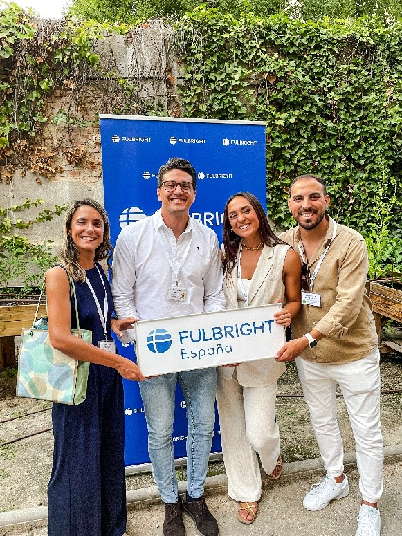
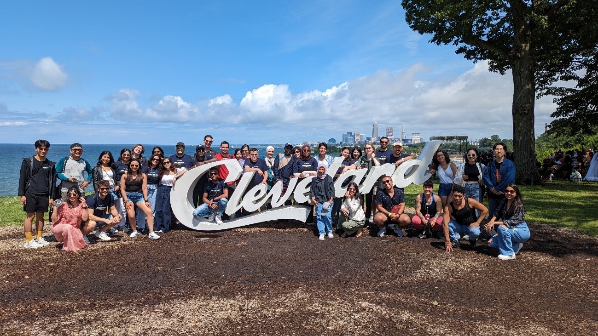
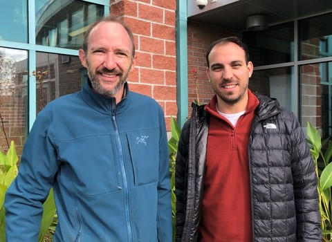
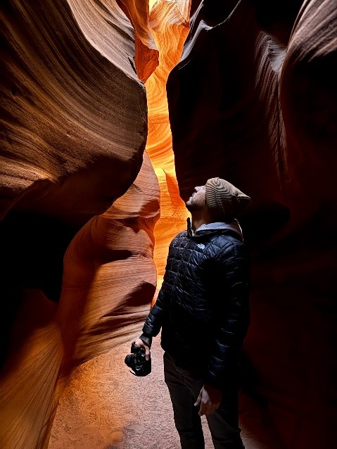

“Droning” Across the Atlantic – A Fulbright Experience for a Lifetime
A little over a year ago, I was nervously calling my thesis advisors (as usual) after the personal interview in Madrid to tell them, “Hey, I might actually have a chance at getting the scholarship!” Since then, my life and career have taken a turn that even the best Hollywood directors couldn’t script. Today, after 7 months on the East Coast of the United States continuing my doctoral studies, I’m certain that nothing like this could ever happen to me, even in my wildest dreams. But let’s go back a bit further in time, because the beginning, in this case, is not to be missed.

Most of my contacts (who are not part of the Fulbright program) would probably agree that this experience began the day I first set foot at Boston Airport on July 22, 2023. However, I have to tell you that this adventure actually starts the day you are selected as a Fulbright scholar. My partner will surely never forget the look of surprise, excitement, and happiness on my face when I read the email notifying me that I had been awarded the scholarship. To give you some context, imagine a young man from Sanlúcar de Barrameda suddenly finding himself in Madrid, surrounded by some of the most talented people he could have met in his field, and telling them, with a mix of awe and curiosity, that he works in marine sciences with his drones. Those three days were exactly what I needed to recharge my batteries, and believe me, the adventure that was about to begin was definitely worth it.

Then came the moment to cross the pond (my first time in the United States), and I had to do it earlier than planned to attend a pre-academic course at Kent State University (Kent, Ohio). Although we were warned about the famous “cultural shock,” what I experienced was quite the opposite. I was literally living in a movie: the houses, the cars, the restaurants, the sports facilities… But what truly won me over was the people, not just the Americans, because what makes this scholarship more than just a scholarship is the immense network of contacts and opportunities it can offer in an unprecedented cultural exchange in my life. I had the chance to meet classmates from all over the world—Argentina, Andorra, Paraguay, Georgia, Chile, Japan, Indonesia, and many more countries—and I have to say that without exception, I made some incredible friends. If I may take a moment, I want to let you know that my stay would not have been the same without meeting you, and I’m confident that you will achieve all your goals because you are outstanding professionals. During this month in Kent, not only did I receive the best assistance with basic tasks like opening a bank account or getting my U.S. phone card, but I also had the chance to visit places I had only seen in movies. One example is Niagara Falls. It’s true that 80% of the time we were sheltered by a rain poncho that got us wetter than it dried us, but the experience of witnessing the power and majesty of nature was definitely worth it.

Well, after a month of unforgettable moments, I boarded a flight with great excitement that would take me to the state of Maryland, marking the beginning of the opportunity I had dreamed of—to start working alongside some of the best professionals in the field of drone research at the Horn Point Laboratory of the University of Maryland (UMCES). Stepping out of the bubble of the pre-academic program, I faced the real “cultural shock.” The lesson here is: never count your victories before the time. The contrast between the movie-like life I had in Kent (Ohio) and the rural Maryland countryside led to probably the two worst weeks of my entire stay. However, over time, professional relationships, and the routine of daily life, this cultural shock became a mere anecdote, allowing me to enjoy an unforgettable experience both personally and professionally.

Professionally, the Fulbright project progressed smoothly from the beginning, even leading to our first results being published midway through the stay. I want to give special mention to this first publication, which was a collaborative effort with colleagues from my Institute of Marine Sciences of Andalusia (ICMAN-CSIC) and my colleague Anna E. Windle from NASA’s Goddard Flight Center. In this publication, we began to highlight the importance and utility of the project we were conducting, applying it to data collected in distant places like the United States and Antarctica. Who would have thought that when I was watching series or movies, I would end up collaborating with NASA itself! I would also like to make a special mention of my supervisor at the Horn Point Laboratory of the University of Maryland, who undoubtedly helped me to see beyond the science I was used to and has been a fundamental pillar in developing all the steps of the project within the expected deadlines.
But without a doubt, what I take away from these 7 months in the United States are the experiences, which will be forever etched in my memory. Being part of such a large and widespread Fulbright network allowed me to travel and visit states that were very distant and different from each other. I was awestruck the first time I saw the skyline of cities like Chicago, Philadelphia, or the always impressive New York. The grandeur of so many buildings towering and disappearing into the clouds became the subject of more than one of my photos. And what can I say about the national parks in this country? The tears of excitement and the “film, film!” that I kept urging my travel companions to do are the only way I can convey even a fraction of what I felt while driving through canyons and mountain ranges during the road trip I took in early January. Honestly, I am at a loss for words.
I was also left speechless by Bryce Canyon, Antelope Canyon, and the Grand Canyon. Though, as a side note, I felt the same way when I stayed in my first typical American motel or when we checked into one of our accommodations (there were four of us) and found only one bed to share. Fortunately, this situation lasted only the 10 minutes it took for us to realize that we had another room reserved. I felt like I was on another planet exploring Joshua Tree National Park, among the stars walking the Hollywood Walk of Fame (I have to admit I didn’t recognize 99% of the stars), or living inside a video game at Venice Beach or Santa Monica Pier in Los Angeles. Autumn gifted me with one of the most beautiful and colorful scenes as I explored Shenandoah National Park in Virginia, while winter turned my house and laboratory completely white in a scene that, honestly, we don’t see very often in my beloved Cádiz.
But beyond the travels, being an ambassador for my homeland in this country and fully immersing myself in its culture has been incredibly enriching. I had the chance to experience firsthand the feelings and pride of American citizens when their anthem plays, participate in “Thanksgiving” or “Friendsgiving” dinners, celebrate Christmas, the Super Bowl, or Halloween with their traditional parades or characteristic festive events, attend a religious service in one of the many churches, try my luck at roulette in a Las Vegas casino, join in on popular parties with the typical red cups at a coworker’s house, or (and I’m sure you’ve never heard this before) attend an official boat parking competition, which, surprisingly, are commonly held on the East Coast of the United States. I could continue listing experiences and never finish, so it’s time to conclude this entry as I prepare my bags to return to Spain after 7 months. I am immensely grateful for the opportunity Fulbright and the Junta de Andalucía gave me to continue my research and “drone” across the Atlantic. I want to extend my thanks to Victoria, Carinna, and Linnea, who have been my support, and even my emotional support at times during the stay, and who have done an impeccable and exemplary job. I am saddened to know that this experience has come to an end, but I am also excited about the countless opportunities that will open up before me upon my return, because I can say with complete certainty that this will be a turning point both personally and professionally.